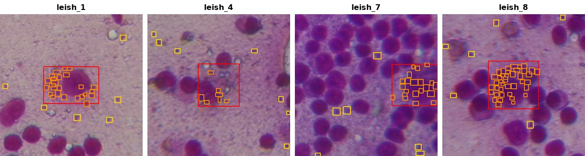

02_recortes_512
Gerado por: 01_preprocessamento/02_gerar_recortes_512.ipynb
Origem: 01_imagens_macrofagos_infectados/
Usado em: exp01–exp05; base de 03_recortes_512_sem_macrofago/ (usado nos exp10, exp12 e exp14) e de 05_recortes_512_macrofago_cor_fundo/ (exp13) e das variantes exp06_/exp07_, hoje em 03_experimentos anteriores/datasets_derivados/
Um recorte 512×512 para cada macrófago infectado (bbox macrophage que contém o centro de uma anotação inside-macrophage), centrado nele. A janela é deslocada, sem esticar, para não sair da imagem. As anotações de todas as classes cujo centro cai na janela são recalculadas para o recorte e cortadas na borda.
- Nome:
<imagem_original>_macro<i>.png. Recortes da mesma imagem podem se sobrepor.
| leish_1 | leish_2 | leish_3 | leish_4 | leish_5 | leish_7 | leish_8 | leish_9 | Total | |
|---|---|---|---|---|---|---|---|---|---|
| Recortes | 96 | 127 | 17 | 126 | 361 | 280 | 353 | 208 | 1.568 |
Instâncias leishmania |
831 | 642 | 10 | 132 | 4.725 | 2.283 | 992 | 1.073 | 10.688 |
Exemplos

Formato
leish_N/: uma subpasta por lâmina, com pares<nome>.png+<nome>.txt..txtno formato YOLO:classe xc yc w h(normalizados 0–1), uma caixa por linha.obj.names:0 Non-macrophages·1 macrophage·2 leishmania(alvo) ·3 inside-macrophage.
Visão geral de todos os datasets: ../README.html.